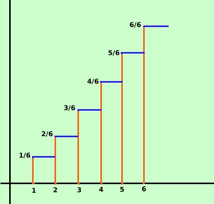
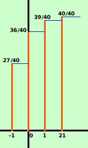

|
La funzione di ripartizione viene introdotta per aiutarci a studiare le distribuzioni di probabilita' Definizione: Sia f(X) una variabile aleatoria, allora si dice funzione di ripartizione F della variabile aleatoria f(X) la funzione F: R->R definita come la somma dei valori precedenti od uguali un dato valore associato ad un blocco della partizione F(x) = k In pratica devi prendere la probabilita' del primo blocco, poi la probabilita' del primo e del secondo e sommarle, poi la probabilita' del primo, del secondo e del terzo e sommarle,... e cosi' via Quindi la funzione di ripartizione diventa una funzione "a scalini" Esempio: Nel caso visto del lancio di un dado avremo che la funzione di ripartizione assume i valori F(X1) = 1/6 F(X2) = 1/6 + 1/6 = 2/6 F(X3) = 1/6 + 1/6 + 1/6 = 3/6 F(X4) = 1/6 + 1/6 + 1/6 + 1/6 = 4/6 F(X5) = 1/6 + 1/6 + 1/6 + 1/6 + 1/6 = 5/6 F(X6) = 1/6 + 1/6 + 1/6 + 1/6 + 1/6 + 1/6 = 6/6 come tabella avremo
Vediamo su un altro esempio gia' sviluppato: estrarre una carta da un mazzo di 40 eventi (ordiniamo secondo la vincita) X1 uscita di una diversa dalle seguenti perdita di 1 euro (27 carte) X2 uscita di una carta di denari diversa dall'asso vincita di 0 euro (9 carte) X3 uscita di un asso diverso dall'asso di denari vincita di 1 euro (3 carte) X4 uscita dell'asso di denari, vincita di 21 euro (1 carta)  probabilita' p1 = probabilita' di uscita di una carta diversa dalle seguenti = 27/40 p2 = probabilita' di uscita di carta di denari non asso = 9/40 p3 = probabilita' di uscita di asso non di denari = 3/40 p4 = probabilita' di uscita dell'asso di denari = 1/40 la funzione di ripartizione sara':
La funzione di ripartizione verra' usata in quei problemi in cui si chiede di calcolare valori inferiori o superiori ad un valore prefissato | .
||||||||||||||||||||||||||||||||||||||||||||||||||||||||||||||||||||||

|

|

|

|